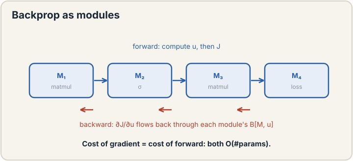

CS229: Machine Learning
Machine learning rebuilt from zero: loss, probability, optimization, neural nets, generative models, modern LLM machinery, and reinforcement learning. Seventeen lectures, Spring 2026 (Ma and Ré). No background assumed: every term is defined at first use.
Start: Lecture 1 → the three paradigms. Fast review: Cheatsheet · Crash course

Mitchell's definition, supervised vs unsupervised vs RL, the course arc. Machine learning in one sentence.

Hypothesis, the loss chip, gradient descent, SGD, normal equations. The cross-course loss symbol debuts.

Maximum likelihood as bedrock. Sigmoid, Newton, IRLS. Every loss is a probabilistic story.

Exponential family unifies regression and classification. Softmax, cross-entropy, label smoothing.

Generative vs discriminative. Gaussians, quadratic boundaries, Bayes' rule flips, Laplace smoothing.

Bias-variance, double descent, train/dev/test, Hyperband. Test sets rot; use them once.

Neurons, ReLU, MLPs, universal approximation, residuals. Bend every layer or depth is pointless.

O(N) theorem, modules, rank-1 gradients, Hessian-vector products. One walk, all gradients.

Clustering: hard assignments, k-means++, soft responsibilities, EM for mixture weights.

ELBO and the E/M steps. PCA: center, rescale, eigenfaces. Variance kept is the headline.

Fixed noising forward, learned denoising back, ELBO training. A thousand easy steps beat one jump.

Pre-train once, adapt everywhere. Embeddings, linear probing, LoRA. The paradigm shift, named here.

Self-supervision without labels. RAG: private knowledge, no training. Behavior vs knowledge, split.

Autoregressive modeling, attention, causal masks, O(T^2 d). The engine under everything modern.

KV cache, MoE, zero/few-shot, instruction tuning. Prompt for flexibility, train for reliability.

MDPs, values, Bellman, REINFORCE. Sequential decisions, policy gradient, stochasticity is load-bearing.

PPO, advantages, verifiable rewards, chain-of-thought. The course ends at the frontier.